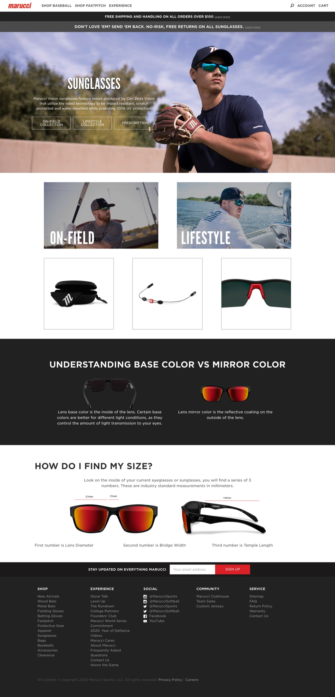
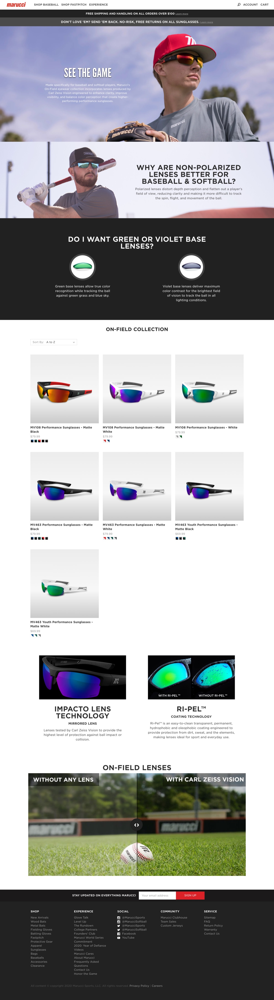
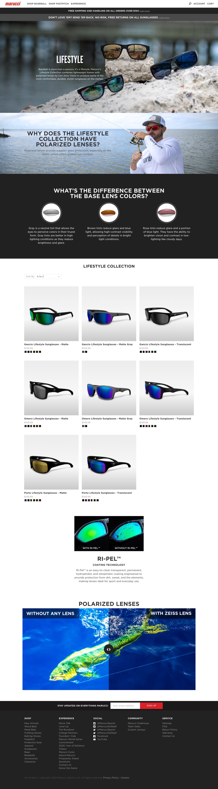
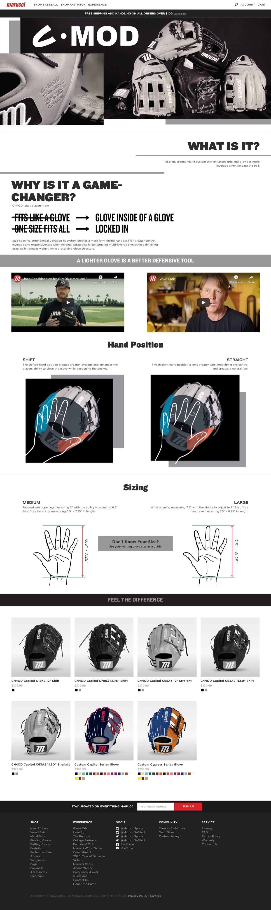
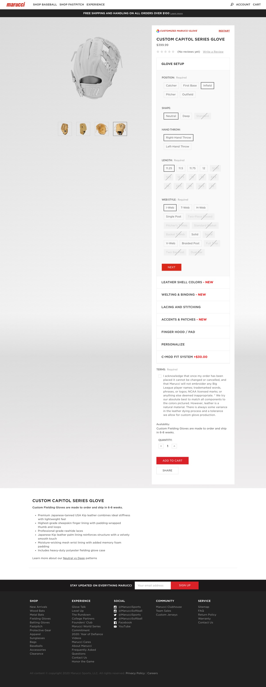
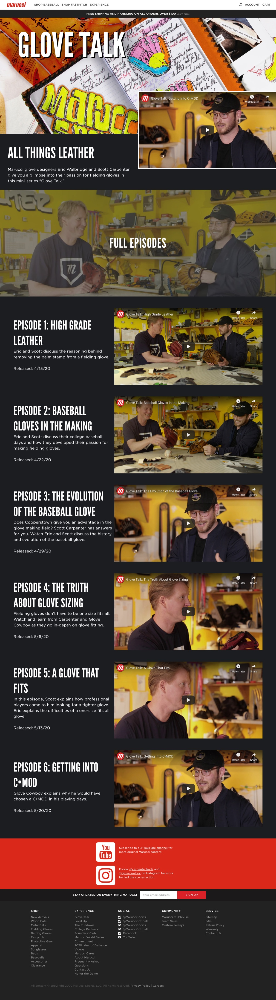

Overview
Marucci Sports is the leader in professional and youth league baseball equipment. They needed a site that showcased just that. Marucci promoted many events, clubs, and products daily.
My Task
My task was to work with the marketing team to design and develop pages for products like the Cat9 Bats, Marucci Sunglasses, and multiple fielding gloves. I also maintained and updated their club pages from college to youth baseball organizations.

Sunglasses Launch
Marucci's entry into performance eyewear needed its own home on the site. I built the sunglasses landing experience - a home page for the line plus dedicated pages for the On-Field and Lifestyle collections, pairing lifestyle photography with product grids.



Fielding Gloves & Glove Talk
For Marucci's glove line I built product pages like the C·MOD series and a glove customizer experience. I also developed the page for "Glove Talk" - a video mini-series where Marucci's glove designers walk through leather grades, glove making, and fitting - laid out as an episode guide with embedded video for each installment.


